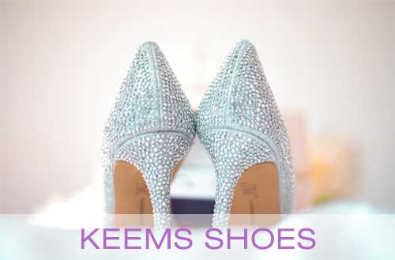
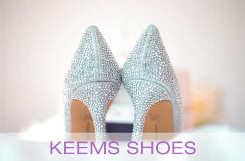

How do I use Afterpay?
Shop online and checkout as normal. At checkout, choose “Afterpay” as your payment method. First-time guests will need to register with Afterpay and provide payment details and returning guests can log in to purchase.
To be eligible for Afterpay, you’ll need to be at least 18 years old (or the legal age in your state of residence). Your order total must be within the minimum amount of $35 USD and maximum of $1,000 USD. Afterpay isn’t available for gift card purchases. You can check all eligibility requirements HERE.

To be eligible for Afterpay, you’ll need to be at least 18 years old (or the legal age in your state of residence). Your order total must be within the minimum amount of $35 USD and maximum of $1,000 USD. Afterpay isn’t available for gift card purchases. You can check all eligibility requirements HERE.

Do you offer exchanges?
If you would like to make an exchange, start a return and ship your item(s) back to us. Select the store credit refund method if you would like to wait for your return to be processed and credit to be given before placing a new order. If you are concerned that your item may sell out, select the refund to your original method of payment and place your new order right away. Once we receive your item(s), please allow 7-10 working days for us to process your refund. Due to constantly changing inventory, we cannot guarantee item availability.
How was KEEMS Shoes started?
KEEMS Shoes was built on the belief in a better tomorrow. In 2006, our founder Blake Mycoskie pioneered the One for One® model after an inspiring trip to Argentina, where he met many children who did not have shoes. Since then, our community has helped provide shoes, sight, and safe water to more than 100 million people around the world.
Today, our model has evolved. We now give ⅓ of our profits for grassroots good — including giving cash grants and forming deep partnerships with community organizations to drive sustainable local change. Learn more about (Y)our Impact.
Today, our model has evolved. We now give ⅓ of our profits for grassroots good — including giving cash grants and forming deep partnerships with community organizations to drive sustainable local change. Learn more about (Y)our Impact.
How do you give impact grants?
KEEMS Shoes invests in organizations focused on creating more equity in mental health, access to opportunities and gun violence prevention. Our grantmaking typically provides funding for a single year against a program or project with defined goals and measurable impact. While every grant is unique, there is a general process we follow:
What's KEEMS Shoes score?
In 2021, we received a score of 121.5, which is 25.2 points higher than our score in 2018.
Along with other B Corps™, we need to maintain or improve our score every three years to keep our certification. The environment is a key area we improved and a place we will continue to focus. You can see our full score breakdown on the B Corp™ website and learn more on our impact overview page.
Along with other B Corps™, we need to maintain or improve our score every three years to keep our certification. The environment is a key area we improved and a place we will continue to focus. You can see our full score breakdown on the B Corp™ website and learn more on our impact overview page.
What are the benefits of each Member level?
All members enjoy benefits like coupons, birthday gifts, early access to KEEMS Shoes.com sales and more. Goodest members also get free shipping.
The Rewards Program sends emails about up-coming sales and promotions. If you do not opt in to KEEMS Shoes emails, you will not receive these notifications. There is an email sign-up at the bottom of every page on KEEMS Shoes.com.
The Rewards Program sends emails about up-coming sales and promotions. If you do not opt in to KEEMS Shoes emails, you will not receive these notifications. There is an email sign-up at the bottom of every page on KEEMS Shoes.com.